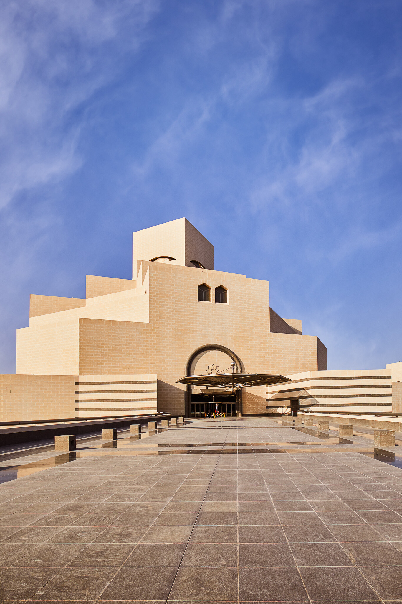
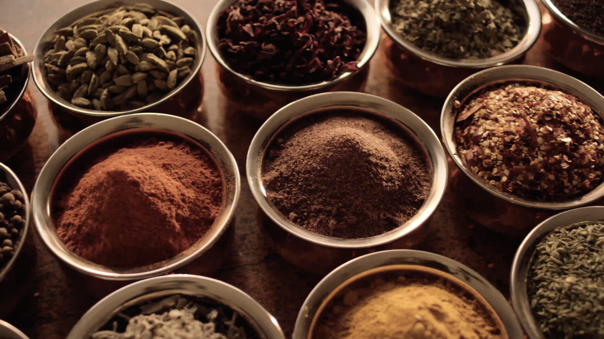
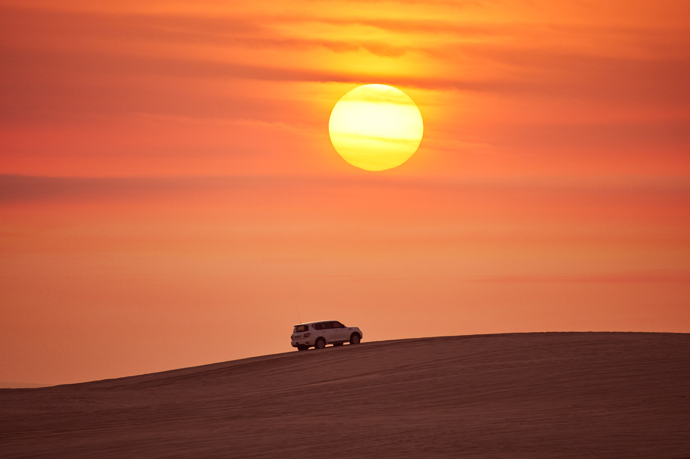
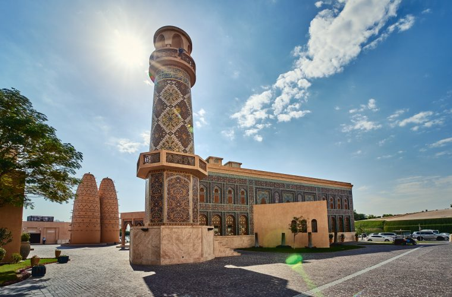
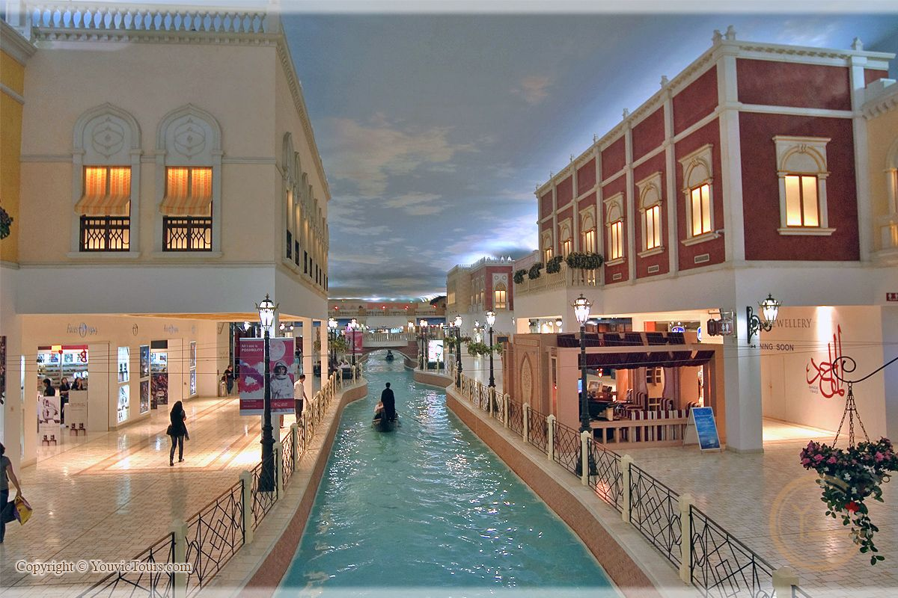

|  |
Discover fascinating cultural and heritage sitesQatar has a thriving arts and culture scene, with a large number of museums and galleries showcasing the country’s history along with contemporary art featuring Arab as well as other international artists. Qatar’s storied pearling industry can be explored at Al Zubarah, once the largest pearl harvesting and trading centres in Qatar and today a Unesco World Heritage Site. The historic Zubarah Fort been transformed into a museum displaying diverse exhibits and artworks. Visitors can explore palaces, courtyard houses, mosques, defensive walls, streets,a canal and cemeteries. |
Eat like a local in QatarA fascinating destination for food enthusiasts, Qatar walks a fine line between modernity and tradition. It presents a rich and diverse culinary scene with a plethora of choices, from Michelin-starred restaurants to traditional Qatari cuisine and flavourful street food. The choices are endless.Qatar is serious about its food, from Michelin-starred to quick bites, and the annual Qatar International Food Festival is a foodie’s dream. Held in the great outdoors during Qatar’s wonderful spring, QIFF serves up culinary experiences, including street foods from around the world. Herewith, the 6 foods any visitors should try in Qatar. |
 |
|  |
Experience dune bashing at the Inland SeaExperience the desert dunes like never before and get that perfect dose of adrenaline rush with a dune bashing adventure. Located in the south of Doha, the Inland Sea - a UNESCO site that is one of few places in the world where the sea encroaches deep into the heart of the desert.A favourite Qatari pastime, visitors can enjoy daytime, evening, or overnight camping trips through one of several companies that operate Bedouin-style camps (with all the mod-cons) in the desert. The reserve is home to wildlife, marine life and vegetation - look out for turtles, flamingos, dugongs, Arabian oryx, camels and more. |
Public artJEDARIART is a collection of public murals by various artists across Doha. The murals allow artists to tell their stories on walls across the city – and can be found in the Qatar National Library Metro Station and the Woqod Petrol Station in Fereej Kulaib. The murals range from abstract, to surrealist to both traditional and modern calligraphy, while embracing different messages that reflect Qatar's history, culture and future. Nestled between limestone rock formations outside Zekreet, just north of Doha, lies Richard Serra’s East-West/West-East installation. Comprising of four steel plates, each of which is over 14m in height, the installation spans over 1km. |
 |
|  |
Shopping mallsDoha's world-class shopping malls are family-friendly destinations. With a comprehensive array of high street and luxury brands from around the world, the larger malls have an extensive range of recreational facilities.These include restaurants and cafes, supermarkets, cinemas, arcades, indoor play areas, ski slopes and live entertainment. Qatar has an abundance of luxury shopping venues. Some of the world’s best brands, experiences and services are located across the city; take your pick and feel like royalty strolling through Doha’s best shopping locations. |